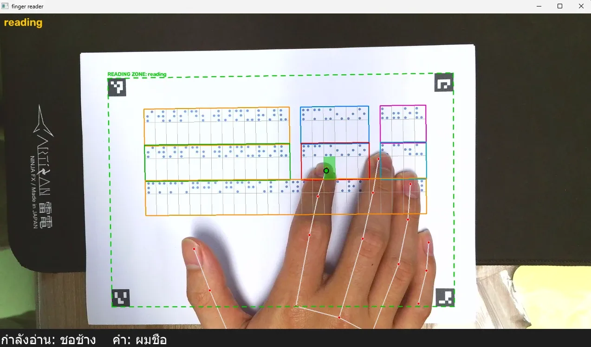
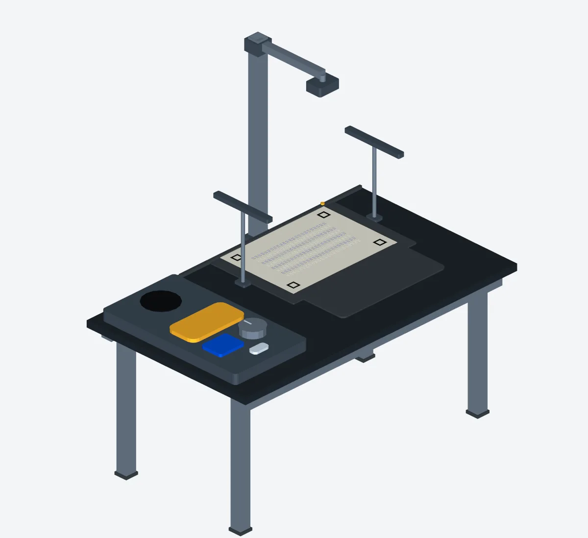
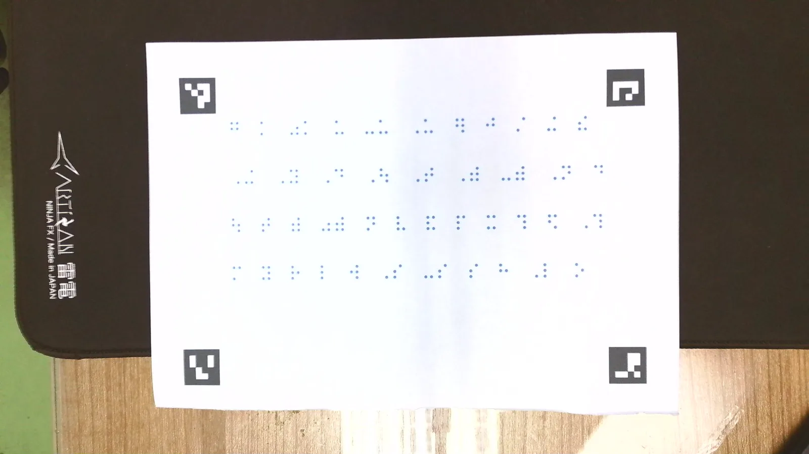

Braille Finger Reader
สถานีฝึกอ่านอักษรเบรลล์ภาษาไทยด้วยนิ้ว ผู้เรียนลากนิ้วบนบรรทัดเบรลล์นูน แล้วระบบพูดชื่อตัวอักษรใต้ปลายนิ้วทันที และพูดทั้งคำเมื่อนิ้วอ่านจบคำ เป็นเวอร์ชันต่อจาก Braille-to-Speech Scanner (v1) ที่ใช้ YOLO

Overview
หลักการ
หนังสือแต่ละหน้ามี 2 บรรทัดคู่กัน คือบรรทัดจุดสีน้ำเงินที่พิมพ์ไว้ให้กล้องอ่าน และบรรทัดนูนที่เขียนด้วยสเลทไว้ให้นิ้วสัมผัสอยู่ใต้บรรทัดสีพอดี กล้องอ่านบรรทัดสี ส่วน MediaPipe ตามตำแหน่งนิ้ว ระบบจึงรู้ว่านิ้วอยู่บนเซลล์ไหน
จุดเด่น
- เริ่มพูดประมาณ 0.2 วินาทีหลังนิ้วแตะเซลล์ เพราะเตรียมเสียงทั้งหน้าไว้ล่วงหน้า
- กระดาษเลื่อนระหว่างอ่านได้ ระบบตามหน้าเดิมต่อ และจำหน้าใหม่เองเมื่อพลิกหน้า
- ใช้เสียง Edge TTS เมื่อมีอินเทอร์เน็ต และ Piper เมื่อออฟไลน์
Tech stack
Python 3.12 · OpenCV (ArUco, HSV) · MediaPipe Hand Landmarker · Edge TTS · Piper TTS · python-docx
How it works





Why MediaPipe
- ได้ตำแหน่งข้อนิ้ว 21 จุดต่อมือจากภาพ RGB ธรรมดา ไม่ต้องฝึกโมเดลเองหรือติดเซนเซอร์ที่นิ้ว
- ใช้ปลายนิ้วชี้ (landmark 8) ขยับเข้าหาข้อนิ้วเล็กน้อย ให้ตรงกับส่วนที่สัมผัสจุดจริง
- ล็อกนิ้วที่กำลังอ่านไว้แม้มีสองมือในภาพ และคงล็อกไว้เมื่อตรวจไม่เจอชั่วครู่
- แปลงตำแหน่งนิ้วเป็นมิลลิเมตรด้วย homography จาก marker แล้วใช้ state machine ตัดสินว่านิ้วเข้าเซลล์ใหม่ อยู่ระหว่างคำ หรือยกนิ้ว
Results & limits
- ทดสอบจริงที่กล้องสูง 270 มม. อ่านเซลล์ถูก 59 จาก 60 เซลล์
- มีชุด unit test และเครื่องมือวัดความแม่นการอ่านจากภาพถ่ายเทียบข้อความเฉลย
- อ่านได้เฉพาะหนังสือที่ทำตามรูปแบบ (มีบรรทัดสีและ marker)
- ทดสอบบน Windows เท่านั้น และยังไม่ได้ทดสอบกับผู้เรียนจริงและหนังสือหลายหน้า